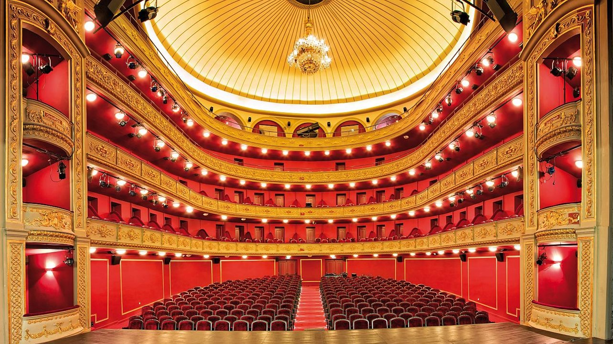

Το ∆ηµοτικό Θέατρο βρίσκεται στο κέντρο της πόλης και κτίστηκε σε σχέδια πιστής αντιγραφής του περίφημου θεάτρου Μπολσόι στη Μόσχα. Ο αρχιτέκτονας του έργου υπήρξε ο καθηγητής του Εθνικού Μετσόβιου Πολυτεχνείου Ιωάννης Λαζαρίμος. Το Δημοτικό Θέατρο Πειραιά, κάνει τα επίσημα εγκαίνιά του, την Κυριακή του Θωμά στις 9 Απριλίου 1895, στις 10.30 το πρωί, μετά "περισσής λαμπρότητος". Η πρόσοψη του θεάτρου είχε διαμορφωθεί έτσι ώστε να μπορούν με ευκολία να παρκάρουν οι "βηκτώριες άμαξες" και τα λεγόμενα "Βιζ-α-βί", λεωφορεία της εποχής. Το λευκό οικοδόμημα με το ναόσχημο πρόπυλο και τις τέσσερεις λεπτές - χωρίς ραβδώσεις - κορινθιακού τύπου κολώνες στην πρόσοψή του, γίνεται σημείο αναφοράς της πολιτιστικής ζωής της πόλης τόσο στον 19ο όσο και τον 20ο αιώνα. Μορφολογικά, έχει τις αναφορές του στην αμιγή κλασικιστική παράδοση και είναι επηρεασμένο από τη γερμανική σχολή που εκπροσωπούσε ο Ερνέστος Τσίλερ. Η σκηνή του θεάτρου θεωρείται ένα από τα ελάχιστα σωζόμενα δείγματα της εποχής μπαρόκ στην Ευρώπη, διαθέτει προσκήνιο και χώρο ορχήστρας ενώ η πλατεία, τα θεωρεία και οι εξώστες εξελίσσονταν σε τέσσερα επίπεδα. Την αίθουσα φώτιζε τεράστιος πολυέλαιος (σώζεται και σήμερα) που λειτουργούσε με γκάζι.
